###############################################################################
# 1. filter irrelevant flora studies
###############################################################################
flora_studies <- flora_studies[flora_studies$outcome %in% c("successful","failed"),]
flora_studies <- flora_studies[flora_studies$impact_factor<35,]
table(flora_studies$outcome)
failed successful
709 806 table(flora_studies$outcome)/length(flora_studies$outcome)
failed successful
0.4368453 0.4966112 ###############################################################################
# 2. descriptive analysis with 2 outcomes(failed vs successful) -------------
###############################################################################
flora_studies$outcome_fac_bin <- factor(flora_studies$outcome,
levels = c("failed", "successful"))
plot_data <- flora_studies[flora_studies$outcome %in% c("failed", "successful"),]
ggplot(plot_data, aes(x = impact_factor, fill = outcome_fac_bin)) +
geom_density(position = "fill", alpha = 0.8) +
scale_fill_manual(values = c("failed" = "#e41a1c", "successful" = "#4daf4a"),
name = "Replikations-Ergebnis") +
labs(title = "Anteil der Replikationsergebnisse nach Impact Factor",
x = "Impact Factor",
y = "Anteil (Proportion)") +
theme_minimal()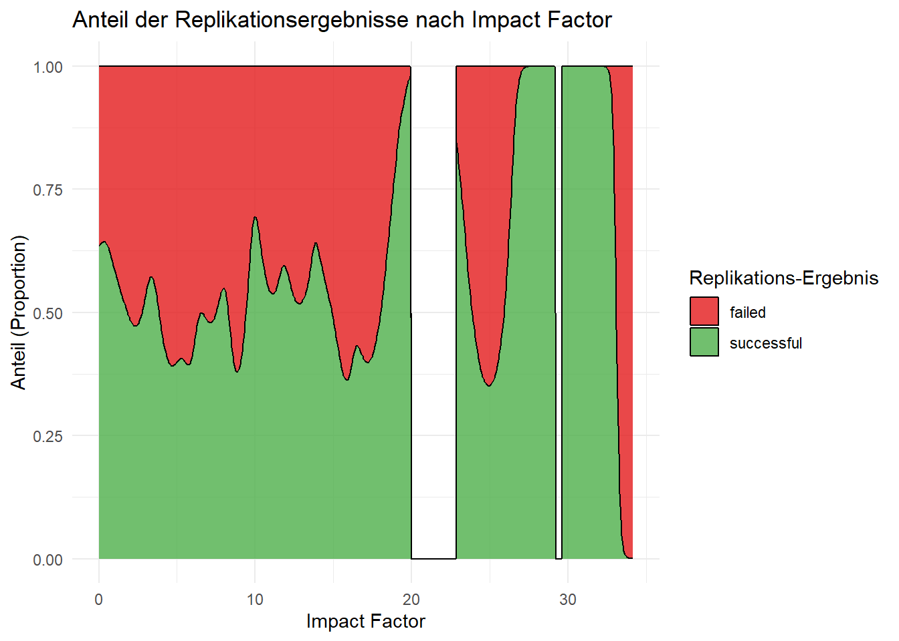
ggplot(plot_data, aes(x = impact_factor, fill = outcome_fac_bin)) +
geom_histogram(position = "stack", binwidth = 1, alpha = 0.8, color = "white", linewidth = 0.1) +
scale_fill_manual(values = c("failed" = "#e41a1c",
"successful" = "#4daf4a"),
name = "Replikations-Ergebnis") +
labs(title = "Absolute Verteilung der Ergebnisse nach Impact Factor",
x = "Impact Factor",
y = "Anzahl der Studien (Count)") +
theme_minimal()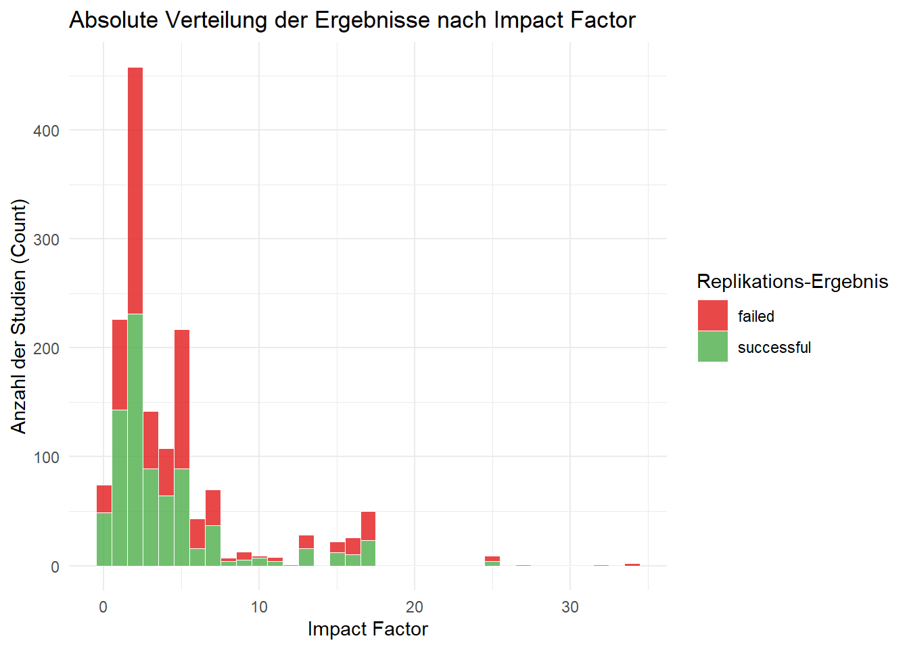
###############################################################################
# 3. Model 2 outcomes(failed vs successful) -------------
###############################################################################
flora_studies$outcome_binary <- ifelse(flora_studies$outcome == "failed", 0, ifelse(flora_studies$outcome == "successful", 1, NA))
flora_studies$impact_factor_log <- log(flora_studies$impact_factor+1)
sum(is.na(flora_studies$impact_factor))[1] 108sum(flora_studies$impact_factor == 0, na.rm = TRUE) [1] 43# is log impact factor necessary for logreg?
flora_bt2 <- flora_studies[flora_studies$impact_factor > 0, ]
flora_bt2$bt_term_raw <- flora_bt2$impact_factor * log(flora_bt2$impact_factor)
log_reg_bt_raw <- glm(outcome_binary ~ impact_factor + bt_term_raw,
family = binomial(link = "logit"),
data = flora_bt2)
summary(log_reg_bt_raw) #yes because bt_term is sig
Call:
glm(formula = outcome_binary ~ impact_factor + bt_term_raw, family = binomial(link = "logit"),
data = flora_bt2)
Coefficients:
Estimate Std. Error z value Pr(>|z|)
(Intercept) 0.53281 0.16073 3.315 0.000917 ***
impact_factor -0.20332 0.08220 -2.474 0.013378 *
bt_term_raw 0.05753 0.02628 2.189 0.028573 *
---
Signif. codes: 0 '***' 0.001 '**' 0.01 '*' 0.05 '.' 0.1 ' ' 1
(Dispersion parameter for binomial family taken to be 1)
Null deviance: 2036.3 on 1471 degrees of freedom
Residual deviance: 2026.7 on 1469 degrees of freedom
(108 Beobachtungen als fehlend gelöscht)
AIC: 2032.7
Number of Fisher Scoring iterations: 3ggplot(flora_studies, aes(x = impact_factor, y = outcome_binary)) +
geom_point(alpha = 0.2) +
geom_smooth(method = "gam", formula = y ~ s(x, bs = "cs"),
method.args = list(family = binomial), color = "blue") +
labs(title = "Linearity Check: Impact Factor vs. Binary Outcome",
x = "Impact Factor", y = "Predicted Probability")Warning: Removed 108 rows containing non-finite outside the scale range
(`stat_smooth()`).Warning: Removed 108 rows containing missing values or values outside the scale range
(`geom_point()`).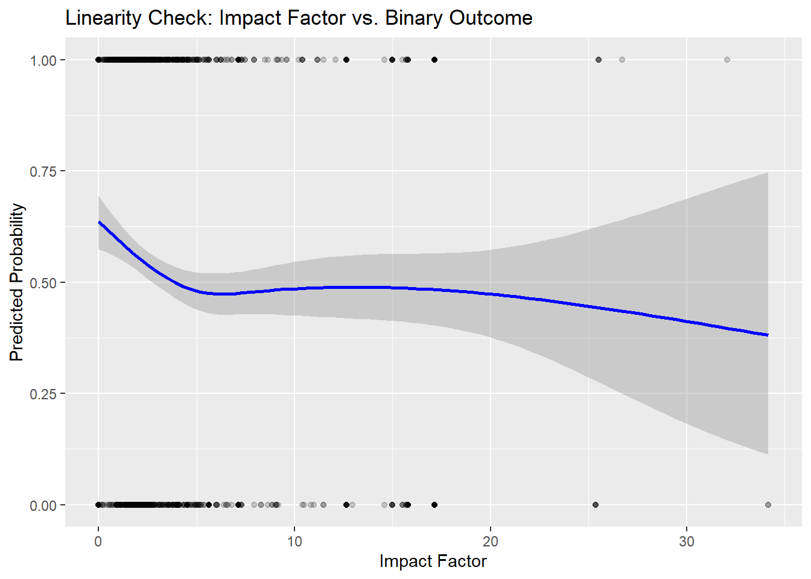
# is logreg generally possible for log impact factor or is the preassumption of linearity between predictor and logodds still not met
flora_bt <- flora_studies[flora_studies$impact_factor_log > 0, ]
flora_bt$bt_term <- flora_bt$impact_factor_log * log(flora_bt$impact_factor_log)
log_reg_bt <- glm(outcome_binary ~ impact_factor_log + bt_term,
family = binomial(link = "logit"),
data = flora_bt)
summary(log_reg_bt)# pre requirement is given, logreg is possible
Call:
glm(formula = outcome_binary ~ impact_factor_log + bt_term, family = binomial(link = "logit"),
data = flora_bt)
Coefficients:
Estimate Std. Error z value Pr(>|z|)
(Intercept) 0.9798 0.3991 2.455 0.0141 *
impact_factor_log -0.7635 0.3906 -1.955 0.0506 .
bt_term 0.3551 0.2639 1.346 0.1784
---
Signif. codes: 0 '***' 0.001 '**' 0.01 '*' 0.05 '.' 0.1 ' ' 1
(Dispersion parameter for binomial family taken to be 1)
Null deviance: 2036.3 on 1471 degrees of freedom
Residual deviance: 2025.2 on 1469 degrees of freedom
(108 Beobachtungen als fehlend gelöscht)
AIC: 2031.2
Number of Fisher Scoring iterations: 4ggplot(flora_studies, aes(x = impact_factor_log, y = outcome_binary)) +
geom_point(alpha = 0.2) +
geom_smooth(method = "gam", formula = y ~ s(x, bs = "cs"),
method.args = list(family = binomial), color = "blue") +
labs(title = "Linearity Check: Log Impact Factor vs. Binary Outcome",
x = "Impact Factor", y = "Predicted Probability")Warning: Removed 108 rows containing non-finite outside the scale range
(`stat_smooth()`).
Removed 108 rows containing missing values or values outside the scale range
(`geom_point()`).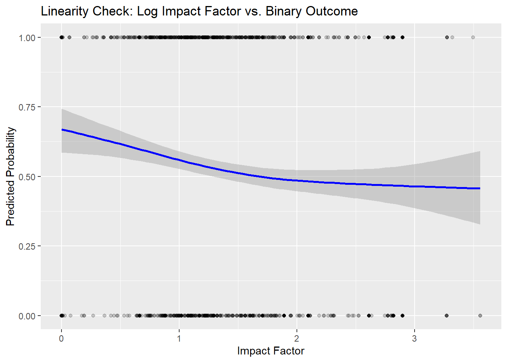
# logistic regression with log impact factor
log_reg_FLorA_log <- glm(outcome_binary~impact_factor_log, family = binomial(link = "logit"), data = flora_studies)
summary(log_reg_FLorA_log)
Call:
glm(formula = outcome_binary ~ impact_factor_log, family = binomial(link = "logit"),
data = flora_studies)
Coefficients:
Estimate Std. Error z value Pr(>|z|)
(Intercept) 0.52855 0.12248 4.315 0.0000159 ***
impact_factor_log -0.28175 0.07803 -3.611 0.000305 ***
---
Signif. codes: 0 '***' 0.001 '**' 0.01 '*' 0.05 '.' 0.1 ' ' 1
(Dispersion parameter for binomial family taken to be 1)
Null deviance: 2094.0 on 1514 degrees of freedom
Residual deviance: 2080.8 on 1513 degrees of freedom
(108 Beobachtungen als fehlend gelöscht)
AIC: 2084.8
Number of Fisher Scoring iterations: 4#omni bus test
modelchi <- log_reg_FLorA_log$null.deviance - log_reg_FLorA_log$deviance
chidf <- log_reg_FLorA_log$df.null - log_reg_FLorA_log$df.residual
chisqp <- 1-pchisq(modelchi, chidf)
chisqp # model is significant overall[1] 0.0002791# OR and 95% KI
exp(cbind(OR = coef(log_reg_FLorA_log), confint(log_reg_FLorA_log)))Waiting for profiling to be done... OR 2.5 % 97.5 %
(Intercept) 1.6964765 1.3357426 2.1595029
impact_factor_log 0.7544632 0.6469206 0.8785948#model visualisation
pred_data <- data.frame(
impact_factor = seq(min(flora_studies$impact_factor, na.rm = TRUE),
max(flora_studies$impact_factor, na.rm = TRUE),
length.out = 500)
)
pred_data$impact_factor_log <- log(pred_data$impact_factor + 1)
pred <- predict(log_reg_FLorA_log, newdata = pred_data,
type = "link", se.fit = TRUE)
pred_data$prob <- plogis(pred$fit)
pred_data$lower <- plogis(pred$fit - 1.96 * pred$se.fit)
pred_data$upper <- plogis(pred$fit + 1.96 * pred$se.fit)
# P=0.5 Threshold: β0 + β1*log(IF+1) = 0 → IF = exp(-β0/β1) - 1
b0 <- coef(log_reg_FLorA_log)[1]
b1 <- coef(log_reg_FLorA_log)[2]
threshold_IF <- exp(-b0 / b1) - 1
cat("P(success) = 0.5 | Impact Factor:", round(threshold_IF, 2), "\n")P(success) = 0.5 | Impact Factor: 5.53 ggplot(pred_data, aes(x = impact_factor)) +
geom_ribbon(aes(ymin = lower, ymax = upper), fill = "blue", alpha = 0.15) +
geom_line(aes(y = prob), color = "blue", linewidth = 1) +
geom_jitter(data = flora_studies,
aes(x = impact_factor, y = outcome_binary),
alpha = 0.15, height = 0.03, width = 0) +
geom_hline(yintercept = 0.5, linetype = "dashed", color = "gray40") +
geom_vline(xintercept = threshold_IF, linetype = "dashed", color = "red",
linewidth = 0.8) +
annotate("text", x = threshold_IF + 0.5, y = 0.45,
label = paste0("IF = ", round(threshold_IF, 2)),
color = "red", hjust = 0) +
scale_y_continuous(limits = c(0, 1), labels = scales::percent) +
labs(title = "Logistic Regression: Impact Factor vs. probability of replication",
x = "Impact Factor",
y = "P(successful replication)",
caption = "grey: 95%-CI; dashed: P = 0.5 threshold") +
theme_minimal()Warning: Removed 890 rows containing missing values or values outside the scale range
(`geom_point()`).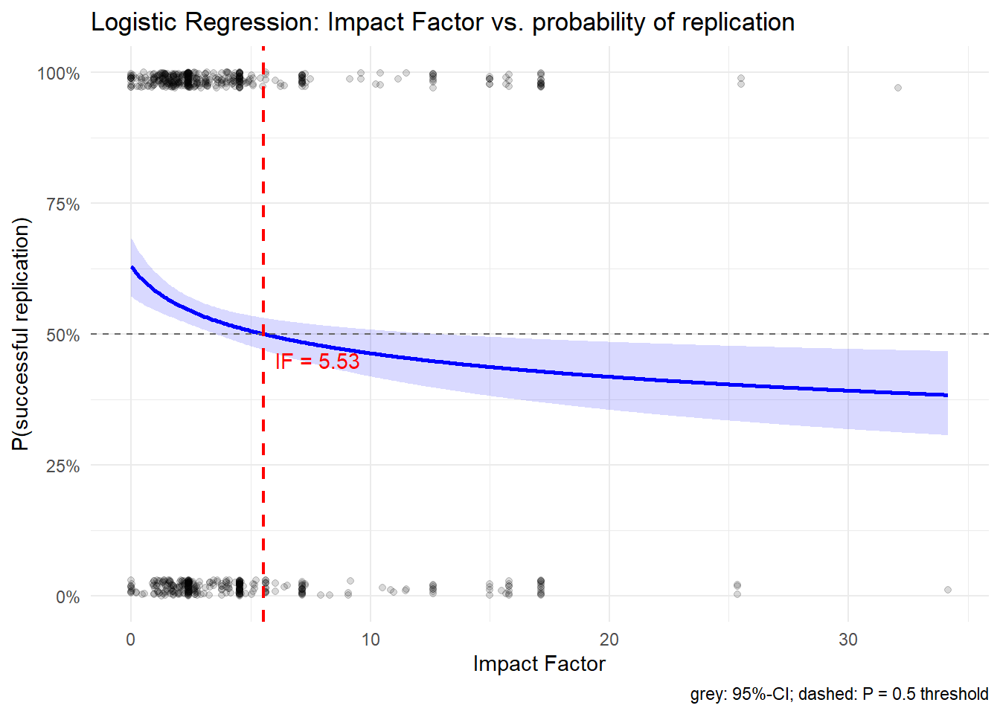
#GAM model
modell_gam <- gam(outcome_binary ~ s(impact_factor_log), data = flora_studies, family = binomial)
summary(modell_gam)
Family: binomial
Link function: logit
Formula:
outcome_binary ~ s(impact_factor_log)
Parametric coefficients:
Estimate Std. Error z value Pr(>|z|)
(Intercept) 0.1321 0.0520 2.541 0.011 *
---
Signif. codes: 0 '***' 0.001 '**' 0.01 '*' 0.05 '.' 0.1 ' ' 1
Approximate significance of smooth terms:
edf Ref.df Chi.sq p-value
s(impact_factor_log) 7.578 8.475 28.67 0.000443 ***
---
Signif. codes: 0 '***' 0.001 '**' 0.01 '*' 0.05 '.' 0.1 ' ' 1
R-sq.(adj) = 0.0168 Deviance explained = 1.59%
UBRE = 0.37148 Scale est. = 1 n = 1515plot(modell_gam, shade = TRUE,
xlab = "impact factor (log)",
ylab = "Effect on log-Odds")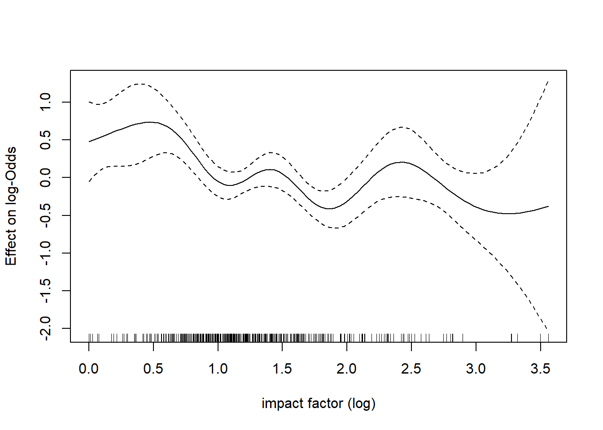
# model prediction on original Impact Factor scale
pred_gam <- data.frame(
impact_factor = seq(min(flora_studies$impact_factor, na.rm = TRUE),
max(flora_studies$impact_factor, na.rm = TRUE),
length.out = 500)
)
pred_gam$impact_factor_log <- log(pred_gam$impact_factor + 1)
# calculate CI on link scale, then transform on probabilities
pred <- predict(modell_gam, newdata = pred_gam, type = "link", se.fit = TRUE)
pred_gam$prob <- plogis(pred$fit)
pred_gam$lower <- plogis(pred$fit - 1.96 * pred$se.fit)
pred_gam$upper <- plogis(pred$fit + 1.96 * pred$se.fit)
ggplot(pred_gam, aes(x = impact_factor)) +
geom_ribbon(aes(ymin = lower, ymax = upper), fill = "blue", alpha = 0.15) +
geom_line(aes(y = prob), color = "blue", linewidth = 1) +
geom_hline(yintercept = 0.5, linetype = "dashed", color = "gray40") +
geom_jitter(data = flora_studies,
aes(x = impact_factor, y = outcome_binary),
alpha = 0.15, height = 0.03, width = 0) +
scale_y_continuous(limits = c(0, 1), labels = percent_format()) +
labs(title = "GAM: Impact Factor vs. probability of replication",
x = "Impact Factor",
y = "P(successful replication)",
caption = "grey: 95%-CI; dashed: P = 0.5 threshold") +
theme_minimal()Warning: Removed 856 rows containing missing values or values outside the scale range
(`geom_point()`).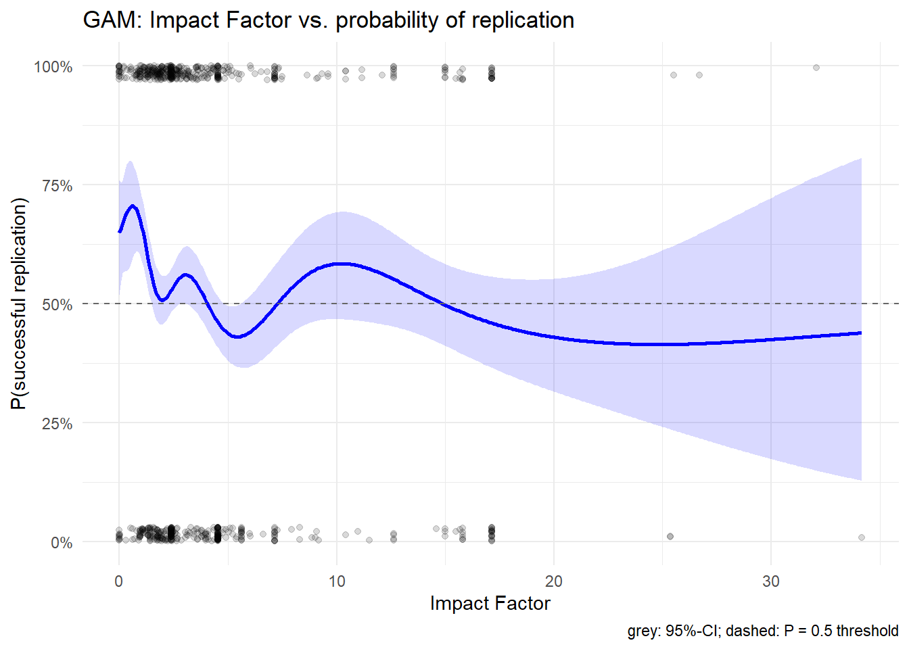
## illustrating studies that are only incldued in flora but not in guther:
flora_studies$in_guther <- paste(flora_studies$doi_o, flora_studies$doi_r) %in%
paste(GutheR_studies$doi_o, GutheR_studies$doi_r)
ggplot(pred_gam, aes(x = impact_factor)) +
geom_ribbon(aes(ymin = lower, ymax = upper), fill = "blue", alpha = 0.15) +
geom_line(aes(y = prob), color = "blue", linewidth = 1) +
geom_hline(yintercept = 0.5, linetype = "dashed", color = "gray40") +
geom_jitter(data = flora_studies,
aes(x = impact_factor, y = outcome_binary, color = in_guther),
alpha = 0.5, height = 0.2, width = 0) +
scale_color_manual(values = c("TRUE" = "gray40", "FALSE" = "orange"),
labels = c("TRUE" = "in GutheR", "FALSE" = "only in FLorA"),
name = "") +
scale_y_continuous(limits = c(0, 1), labels = percent_format()) +
labs(title = "GAM: Impact Factor vs. probability of replication",
x = "Impact Factor",
y = "P(successful replication)",
caption = "grey: 95%-CI; dashed: P = 0.5 threshold") +
theme_minimal()Warning: Removed 883 rows containing missing values or values outside the scale range
(`geom_point()`).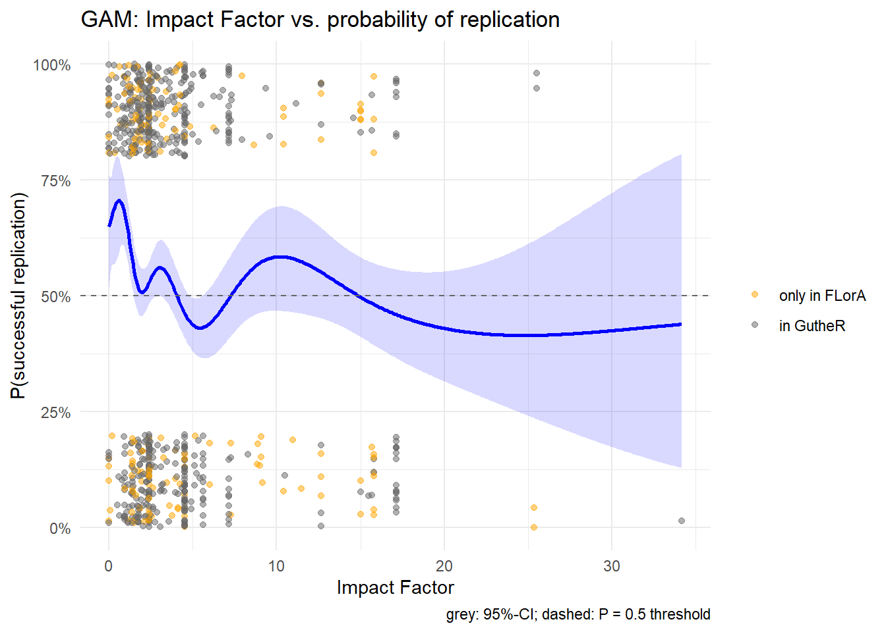
# Comparison of Models
##AIC
AIC(log_reg_FLorA_log, modell_gam) df AIC
log_reg_FLorA_log 2.000000 2084.815
modell_gam 8.578322 2077.787##McFadden R2
null_model <- glm(outcome_binary ~ 1, family = binomial, data = flora_studies)
r2_logreg <- 1 - logLik(log_reg_FLorA_log) / logLik(null_model)
r2_gam <- 1 - logLik(modell_gam) / logLik(null_model)
cat("McFadden R² LogReg:", round(r2_logreg, 4), "\n")McFadden R² LogReg: 0.0063 cat("McFadden R² GAM: ", round(r2_gam, 4), "\n")McFadden R² GAM: 0.0159 ##AUC
roc_logreg <- roc(log_reg_FLorA_log$y, fitted(log_reg_FLorA_log))Setting levels: control = 0, case = 1Setting direction: controls < casesauc(roc_logreg)Area under the curve: 0.5596roc_gam <- roc(modell_gam$y, predict(modell_gam, type = "response"))Setting levels: control = 0, case = 1
Setting direction: controls < casesauc(roc_gam)Area under the curve: 0.5819###############################################################################
# Does discipline confound relationship of impact factor and replicability?
###############################################################################
DISCIPLINES <- readRDS("disciplines.rds")
normalize <- function(x) {
x <- tolower(x)
x <- gsub("[^a-z0-9 ]", " ", x)
x <- gsub("\\s+", " ", x)
x <- trimws(x)
return(x)
}
# 3. Lookup-Table:
lookup <- data.frame(
journal_norm = normalize(unlist(DISCIPLINES)),
discipline = rep(names(DISCIPLINES), lengths(DISCIPLINES)),
stringsAsFactors = FALSE
)
# 4. Matching
flora_studies$journal_norm <- normalize(flora_studies$journal_o)
flora_studies$discipline <- lookup$discipline[
match(flora_studies$journal_norm, lookup$journal_norm)
]
# 5. Diagnostics
cat("Matched: ", sum(!is.na(flora_studies$discipline)), "\n")Matched: 1515 cat("Not found:", sum( is.na(flora_studies$discipline)), "\n")Not found: 108 cat("Proportion NA: ", round(mean(is.na(flora_studies$discipline)) * 100, 1), "%\n")Proportion NA: 6.7 %# How many cases per discipline
table(flora_studies$discipline, useNA = "always")
Biology & Life Sciences
153
Communication & Media
16
Computer Science & HCI
7
Criminology & Law
2
Economics
79
Education
73
Genetics & Molecular Biology
31
Linguistics & Language Sciences
44
Management, Marketing & Organizational Behavior
125
Medicine & Health
88
Neuroscience
58
Philosophy & Humanities
32
Political Science
29
Psychiatry & Mental Health
44
Psychology
684
Public Administration & Policy
6
Sociology & Social Sciences
20
Sport & Exercise Science
24
<NA>
108 # Basic Model (only random intercept)
modell_null <- glmer(outcome_binary ~ 1 + (1 | discipline),
family = binomial,
data = flora_studies)
# Multilevel-Model with Impact Factor
modell_ml <- glmer(outcome_binary ~ impact_factor_log + (1 | discipline),
family = binomial,
data = flora_studies)
summary(modell_ml)Generalized linear mixed model fit by maximum likelihood (Laplace
Approximation) [glmerMod]
Family: binomial ( logit )
Formula: outcome_binary ~ impact_factor_log + (1 | discipline)
Data: flora_studies
AIC BIC logLik -2*log(L) df.resid
2057.3 2073.3 -1025.7 2051.3 1512
Scaled residuals:
Min 1Q Median 3Q Max
-2.0267 -0.9734 0.5652 0.9721 1.2606
Random effects:
Groups Name Variance Std.Dev.
discipline (Intercept) 0.1583 0.3979
Number of obs: 1515, groups: discipline, 18
Fixed effects:
Estimate Std. Error z value Pr(>|z|)
(Intercept) 0.84048 0.18705 4.493 0.00000701 ***
impact_factor_log -0.33654 0.09441 -3.565 0.000364 ***
---
Signif. codes: 0 '***' 0.001 '**' 0.01 '*' 0.05 '.' 0.1 ' ' 1
Correlation of Fixed Effects:
(Intr)
impct_fctr_ -0.736# ICC: Proportion of Variance explained by discipline
# binary models: Level-1-Variance = π²/3 ≈ 3.29
tau2 <- as.numeric(VarCorr(modell_ml)$discipline)
icc <- tau2 / (tau2 + (pi^2 / 3))
cat("ICC:", round(icc, 3), "\n")ICC: 0.046 # comparison: does impact factor explain variance when discipline is included?
anova(modell_null, modell_ml)Data: flora_studies
Models:
modell_null: outcome_binary ~ 1 + (1 | discipline)
modell_ml: outcome_binary ~ impact_factor_log + (1 | discipline)
npar AIC BIC logLik -2*log(L) Chisq Df Pr(>Chisq)
modell_null 2 2068.1 2078.7 -1032.0 2064.1
modell_ml 3 2057.3 2073.3 -1025.7 2051.3 12.733 1 0.0003593 ***
---
Signif. codes: 0 '***' 0.001 '**' 0.01 '*' 0.05 '.' 0.1 ' ' 1# AIC-comparison with simple LogReg without random effect
AIC(log_reg_FLorA_log, modell_null, modell_ml)#attention with interpretation it's not sound df AIC
log_reg_FLorA_log 2 2084.815
modell_null 2 2068.075
modell_ml 3 2057.342########################### Check of Prerequirements
#singularity
cat("Singular?:", isSingular(modell_ml, tol = 1e-4), "\n")Singular?: FALSE #convergence
if (!is.null(modell_ml@optinfo$conv$lme4$messages))
warning(paste(modell_ml@optinfo$conv$lme4$messages, collapse = " | "))
#separation
detect_sep <- glm(outcome_binary ~ impact_factor_log,
data = flora_studies,
family = binomial,
method = "detect_separation")
if (detect_sep$outcome == TRUE) {
warning("Perfect separation detected - coefficients and SE not valid")
print(detect_sep)
} else {
cat("No separation detected.\n")
}No separation detected.# QQ-Plot Random Effects (discipline) - check for normal distribution of random effect
re <- ranef(modell_ml)$discipline
qqnorm(re[["(Intercept)"]], main = "QQ-Plot: Random Intercept (discipline)")
qqline(re[["(Intercept)"]], col = "firebrick")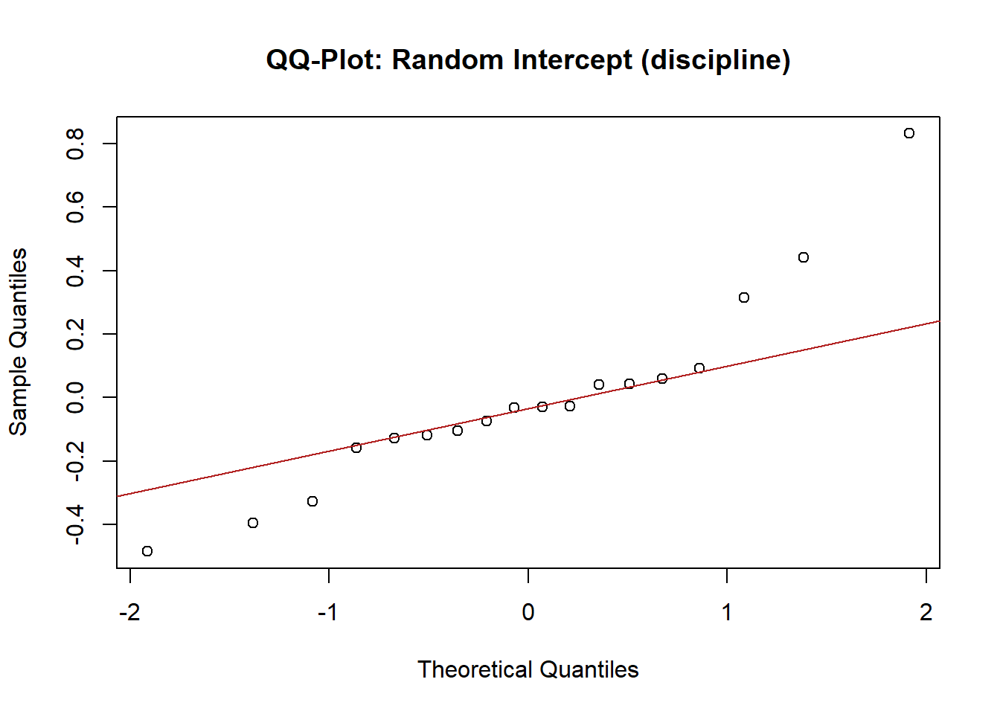
# Linearity of Predictor
flora_studies$discipline <- as.factor(flora_studies$discipline)
gam_check <- gam(
outcome_binary ~ s(impact_factor_log) + s(discipline, bs = "re"),
data = flora_studies,
family = binomial,
method = "REML"
)
summary(gam_check) # edf ~1 → linear; > 2-3 → non-linear
Family: binomial
Link function: logit
Formula:
outcome_binary ~ s(impact_factor_log) + s(discipline, bs = "re")
Parametric coefficients:
Estimate Std. Error z value Pr(>|z|)
(Intercept) 0.3580 0.1296 2.763 0.00573 **
---
Signif. codes: 0 '***' 0.001 '**' 0.01 '*' 0.05 '.' 0.1 ' ' 1
Approximate significance of smooth terms:
edf Ref.df Chi.sq p-value
s(impact_factor_log) 1.477 1.814 10.30 0.00288 **
s(discipline) 9.663 17.000 44.21 < 0.0000000000000002 ***
---
Signif. codes: 0 '***' 0.001 '**' 0.01 '*' 0.05 '.' 0.1 ' ' 1
R-sq.(adj) = 0.0384 Deviance explained = 3.48%
-REML = 1028.6 Scale est. = 1 n = 1515plot(gam_check, pages = 1, residuals = TRUE, shade = TRUE)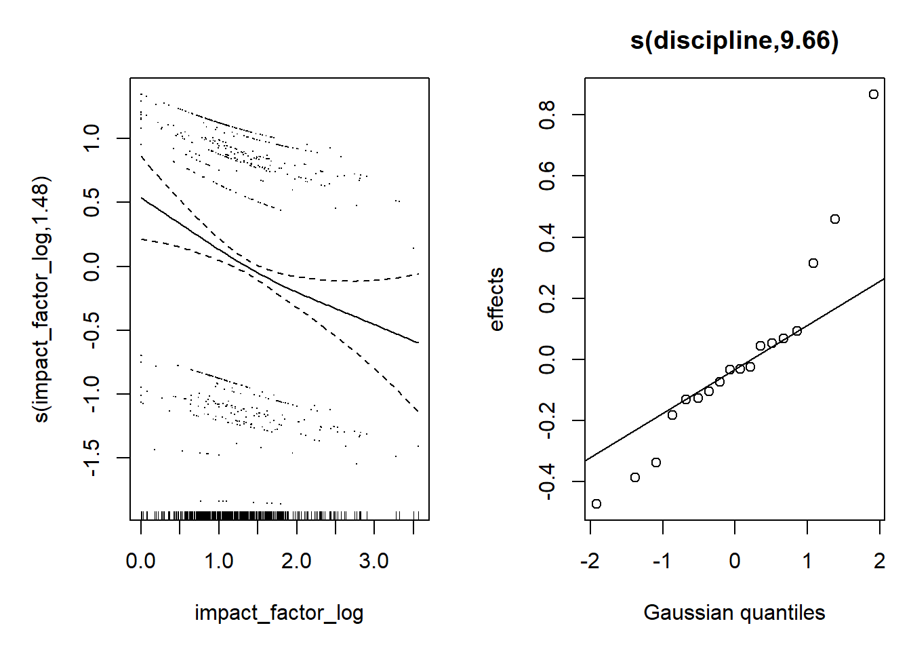
#DHARMa Residuals
sim_res <- simulateResiduals(modell_ml, n = 500)
plot(sim_res)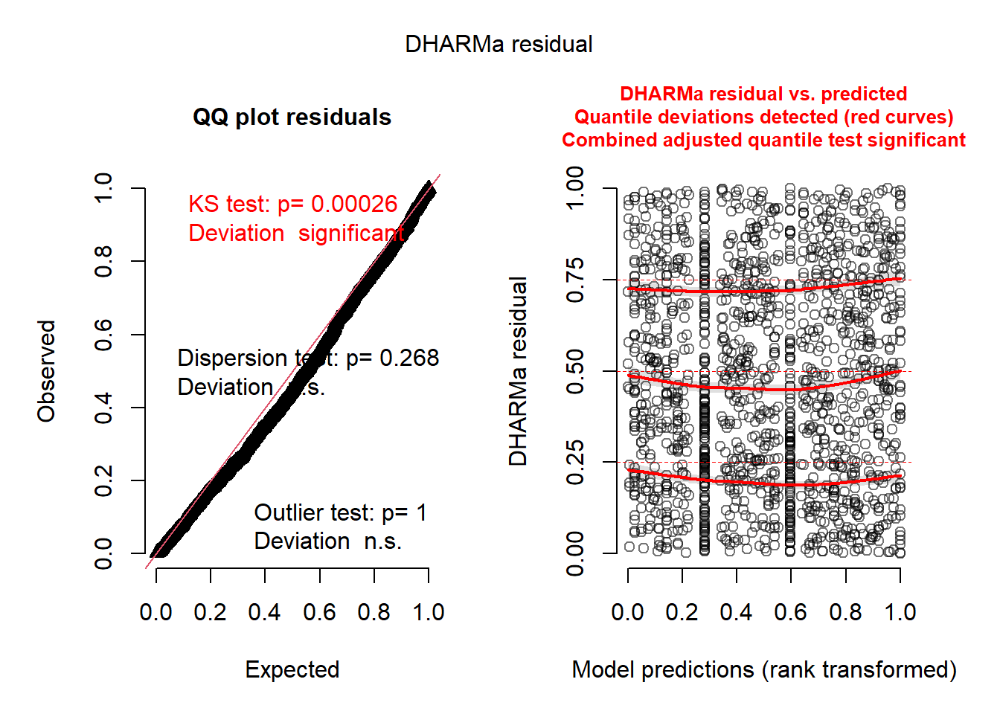
testDispersion(sim_res)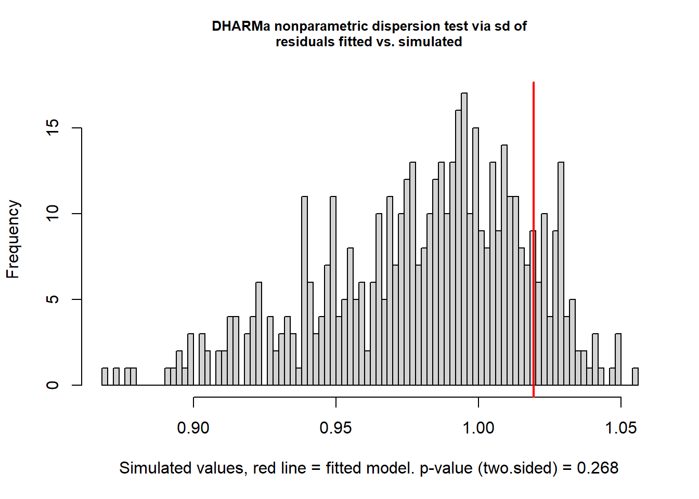
DHARMa nonparametric dispersion test via sd of residuals fitted vs.
simulated
data: simulationOutput
dispersion = 1.0385, p-value = 0.268
alternative hypothesis: two.sidedtestOutliers(sim_res)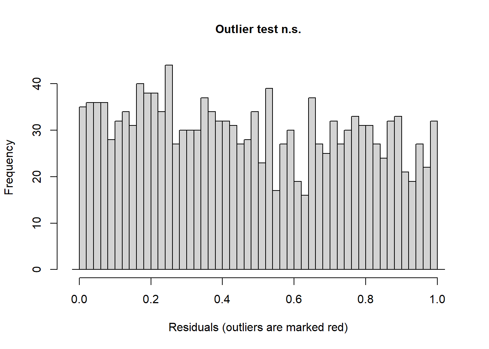
DHARMa outlier test based on exact binomial test with approximate
expectations
data: sim_res
outliers at both margin(s) = 6, observations = 1515, p-value = 1
alternative hypothesis: true probability of success is not equal to 0.003992016
95 percent confidence interval:
0.001454740 0.008600044
sample estimates:
frequency of outliers (expected: 0.00399201596806387 )
0.003960396